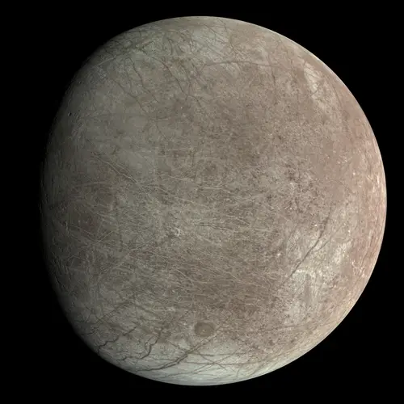

Europa - Lua de Júpiter

Introdução e História
Europa é uma das maiores luas de Júpiter e a sexta maior do Sistema Solar. Descoberta em 8 de janeiro de 1610 por Galileo Galilei, Europa chamou a atenção devido à sua superfície lisa e brilhante, marcada por extensas fraturas e poucas crateras, sugerindo atividade geológica relativamente recente. Observações subsequentes indicam que abaixo da camada de gelo existe um oceano de água líquida que pode conter mais água do que todos os oceanos da Terra juntos.
Características Físicas: Diâmetro, Massa e Órbita
Europa tem aproximadamente 3.121 km de diâmetro, ligeiramente menor que a lua da Terra. Sua superfície é predominantemente gelo de água, com algumas regiões cobertas por sais que dão tonalidades claras e amareladas.
Ela orbita Júpiter a uma distância média de cerca de 670.900 km, completando uma volta ao redor do planeta em aproximadamente 3,55 dias terrestres.
Sua densidade média de 3,01 g/cm³ indica a presença de um núcleo rochoso, envolto por um manto de gelo e um possível oceano global subterrâneo.
Estrutura Interna e Atividade Geológica
Europa possui uma crosta de gelo que pode variar de alguns quilômetros até dezenas de quilômetros de espessura. Sob essa crosta existe um oceano de água salgada em contato com um núcleo rochoso, o que cria potencial para reações químicas que poderiam sustentar vida.
A superfície apresenta longas fraturas lineares, chamadas de "lineae", que podem ter sido causadas pelo estiramento e compressão da crosta gelada devido à interação gravitacional com Júpiter e suas outras luas.
Missões Espaciais
Europa tem sido estudada por várias missões, incluindo:
- Voyager 1 e 2 (1979), que registraram imagens de sua superfície;
- Galileo (1995–2003), que forneceu dados detalhados sobre sua gravidade, campo magnético e geologia;
- Missões futuras como Europa Clipper (NASA) prometem estudar em detalhes sua crosta e oceano, investigando seu potencial de habitabilidade.
Atmosfera e Exosfera
Europa possui uma exosfera extremamente fina, composta principalmente de oxigênio molecular. No entanto, essa camada é muito rarefeita para suportar vida como conhecemos, e a maior parte da superfície continua exposta ao espaço.
Potencial de Habitabilidade
- 💧 Água Líquida: A existência de um oceano global abaixo da crosta de gelo torna Europa um dos locais mais promissores para estudo de vida extraterrestre no Sistema Solar.
- ⚡ Fonte de Energia: As forças de maré geradas por Júpiter fornecem calor suficiente para manter o oceano líquido e possíveis reações químicas que podem sustentar vida.
- 🧬 Ingredientes Químicos: Sais e compostos orgânicos detectados na superfície indicam um ambiente químico favorável.
Curiosidades
Europa é conhecida por sua superfície lisa e brilhante, com algumas regiões apresentando cores amareladas ou marrons devido a sais e impurezas.
Algumas fraturas lineares podem ter centenas de quilômetros de extensão, tornando Europa visualmente distinta de outras luas do Sistema Solar.
Estudos sugerem que erupções de água podem ocorrer através de fissuras na crosta de gelo, possivelmente alimentando uma fina exosfera e conectando o oceano subterrâneo ao espaço.
Origem do Nome
Europa recebeu seu nome na mitologia grega, inspirado na princesa fenícia Europa. Segundo a lenda, ela era uma jovem de grande beleza que chamou a atenção de Zeus, o rei dos deuses. Zeus se transformou em um touro branco e a raptou, levando-a para a ilha de Creta, onde se tornou rainha e mãe de vários filhos que se tornaram importantes figuras mitológicas. O nome da lua reflete essa história lendária, seguindo a tradição de nomear as luas de Júpiter com nomes de personagens ligados à mitologia grega e romana, especialmente aqueles relacionados a Zeus (Júpiter).
Referências
- NASA. Europa: Moon of Jupiter. Disponível em: https://solarsystem.nasa.gov/moons/jupiter-moons/europa/overview/. Acesso em: 24 dez. 2025.
- NASA. Galileo Mission to Jupiter. Disponível em: https://solarsystem.nasa.gov/missions/galileo/. Acesso em: 24 dez. 2025.
- WIKIPEDIA. Europa (lua). Disponível em: https://pt.wikipedia.org/wiki/Europa_(lua). Acesso em: 24 dez. 2025.